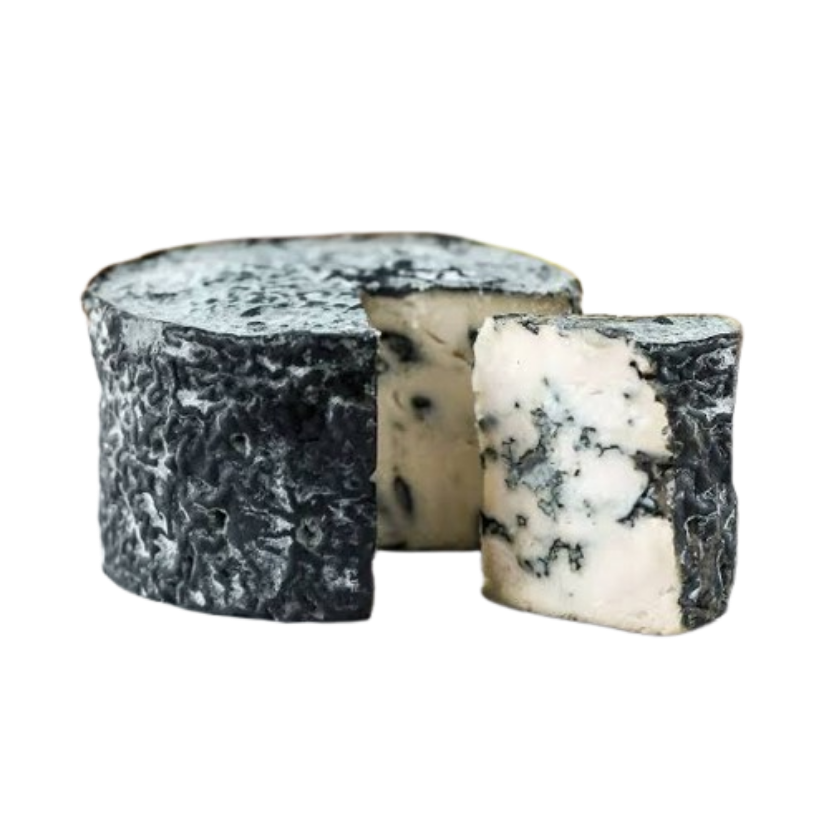

Blue Cheese

Blue cheese fun facts:
Source: hy-vee.com- The promotion of mold on the inside of the cheese is done by piercing the cheese with long needles to create air passages that allow mold to grow. That's why you see blue veins throughout the cheese.
- Blue cheeses often have a salty bite. That's because salt is added to act as a preservative and keep any bad bacteria from growing. It's also why blue cheeses taste amazing with sweet wines or when drizzled with honey. It's the salty-sweet match made in heaven.
- How long blue cheese ages makes a big difference in the outcome. The longer it ages, the drier it gets. For example, a Gorgonzola Dolce is aged for about two months, and is very creamy; whereas Gorgonzola Piccante is aged for six months, making it more crumbly.
- Blue cheeses like to be kept cold, at around 38 to 42 degrees F. In other words, keep them in the back of the fridge away from the door.